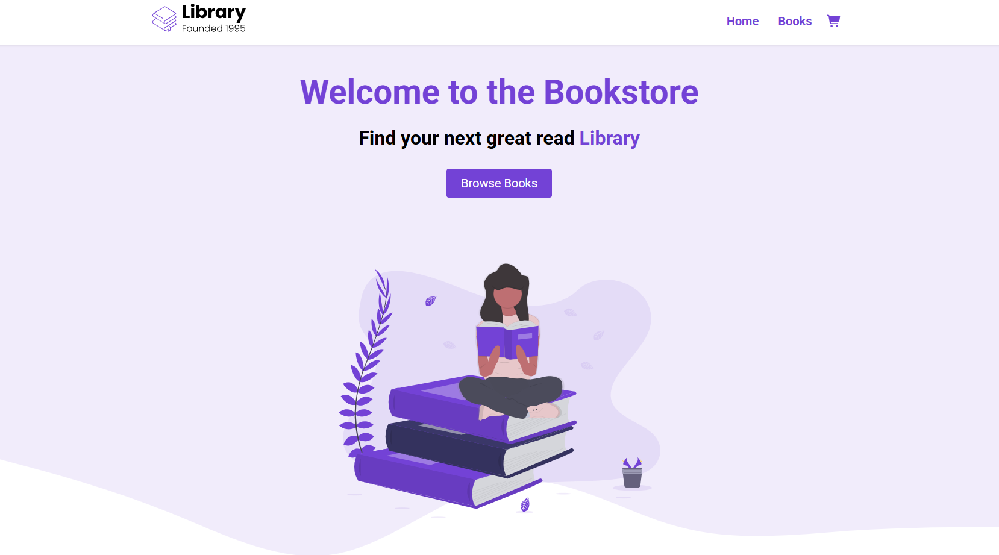
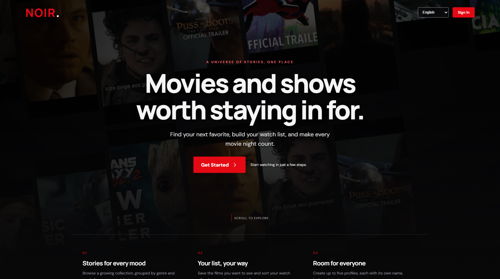

↗A personal space for showing work, sharing a point of view, and giving the curious somewhere to land.
Web designHTMLCSS
PERSONAL PORTFOLIO / OPEN BOOK, OPEN TAB
I`m Aspen — a maker, reader, and lifelong work-in-progress. I turn curiosity into things you can click, explore, and remember.
Equal parts builder and daydreamer. I like making the internet feel a little more human — and asking “what if?” until something interesting happens.
One minute I’m putting a project together; the next I’ve disappeared into a book, a movie, or an overly specific dinosaur fact. I’m drawn to experiences with a point of view: clear, a little unexpected, and made with care.
A peek at what I’m learning ↗A few stops along the learning curve.
Every project starts with a question.

↗A personal space for showing work, sharing a point of view, and giving the curious somewhere to land.

↗A companion project exploring how information can feel more considered, readable, and inviting.
I`m growing my craft one thoughtful project at a time. Come see what’s in progress.
Good stories come in more than one format.
Reading for the worlds; writing to see where a thought goes.
A good film leaves a little echo after the credits roll.
Spinosaurus is the favorite. A sail like that deserves top billing.
ONE CLICK AT A TIME
Give this little dinosaur a click. Every click adds a bit more color, and after 20 it’s fully brought to life.
The dinosaur fills with every community click.
Connecting to the community tally…
I`m always up for a thoughtful hello, a collaboration, or a conversation about prehistoric river monsters.
Find me on GitHub ↗ ✳